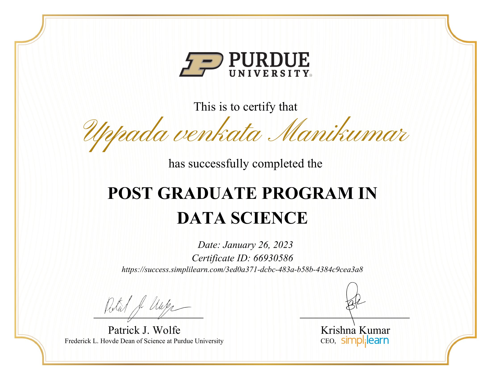

venkata Manikumar Uppada
Data Science resume built with R Quarto markdown
As a highly skilled and experienced Backend Engineer with a passion for data science, I have successfully leveraged my technical skills to transition into the field of data analytics and engineering. With a post-graduation in data science, I possess a strong foundation in statistical analysis, machine learning algorithms, and data visualization techniques.
Over the course of my two years of experience in back-end engineering, I have developed expertise in designing, developing, and maintaining high-performance, scalable applications and systems. I have a deep understanding of databases, API development, and cloud-based infrastructure, which has enabled me to create efficient data pipelines for data processing and analysis.
I have experience working with large datasets, and have expertise in SQL, R,Python, Tableau,Power BI and deploying data-driven solutions, optimizing data pipelines, and ensuring data quality and integrity for data analysis and manipulation.
With my strong technical background and deep knowledge of data science, I am confident in my ability to contribute to any organization resume here.
Education
2022 - 2023
Post Graduation Data Science
Simplilearn Alumni | Purdue University & IBM
2015 - 2019
B.Tech Electrical & Electronics Engineering
S R K R Engineering college | Andhra University A.P
Experience
Certifications



Skills
As a Back-end Engineer, my skill set includes the following:
Proficiency in programming languages such as Python, Java and R
Experience with web frameworks such as Django,spring(Basic)
Knowledge of database management systems such as Oracle, MySQL and PostgreSQL
Familiarity with version control systems such as Git
Experience with cloud computing platforms such as AWS
Knowledge of RESTful API design and development
Experience with JIRA Ticketing Tool and Tableau
Familiarity with serverless architecture and microservices(Excel)
Currently, I am learning related to data science, including:
Machine learning algorithms and libraries such as scikit-learn and TensorFlow
Data visualization tools such as Matplotlib and Seaborn
Data cleaning and preprocessing techniques
Natural Language Processing (NLP)
Deep Learning
In the future, I plan to brush up on the following:
Advanced machine learning techniques such as neural networks and reinforcement learning
Big data technologies such as Hadoop and Spark
Advanced database management and optimization techniques
Cloud-native development and deployment practices
Security best practices for web applications and APIs
About this resume
- Created by Venkata Manikumar Uppada
- Packages used: Quarto, Tidyverse, gtrendsR, showtext, ggthemes, cowplot, magick, ggimage